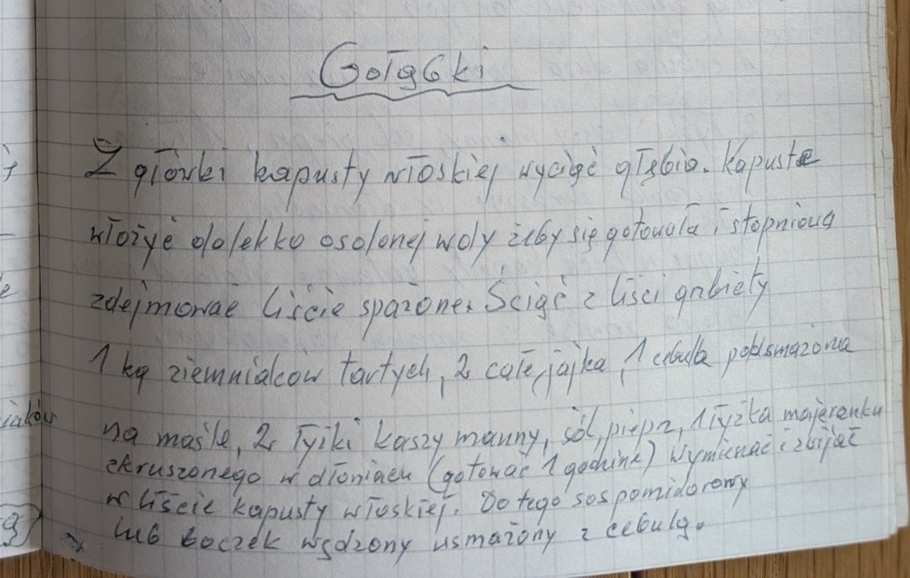

Gołąbki


Składniki
- główka kapusty włoskiej
- 1 kg tartych ziemniaków
- 2 całe jajka
- 1 cebula
- masło
- 2 łyżki kaszy manny
- sól, pieprz
- 1 łyżka majeranku
- sos pomidorowy lub boczek wędzony z cebulą
Przygotowanie
- Z kapusty wyciąć głąb, gotować w lekko osolonej wodzie i stopniowo zdejmować sparzone liście; ściąć grubizny.
- Ziemniaki, jajka, cebulę podsmażoną na maśle, kaszę mannę, sól, pieprz i majeranek rozkruszony w dłoniach wymieszać.
- Zawijać w liście kapusty włoskiej.
- Gotować 1 godzinę.
- Podawać z sosem pomidorowym lub boczkiem wędzonym usmażonym z cebulą.
Oryginalny zapis
Gołąbki Z główki kapusty włoskiej wyciąć głąbia. Kapustę włożyć do lekko osolonej wody żeby się gotowała i stopniowo zdejmować liście sparzone. Ściąć z liści grubizny 1 kg ziemniaków tartych, 2 całe jajka, 1 cebula podsmażona na maśle, 2 łyżki kaszy manny, sól, pieprz, 1 łyżka majeranku zkruszonego w dłoniach (gotować 1 godzinę) wymieszać i zawijać w liście kapusty włoskiej. Do tego sos pomidorowy lub boczek wędzony usmażony z cebulą.